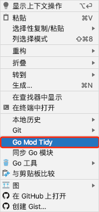

GFVA小白说明书
1. 目录结构
2. 实战操作
本项目的编程环境
| 推荐 | 开发环境(指的是开发此项目的开发环境) | |
|---|---|---|
| Golang | 1.11 | 1.14.4 |
| MySQL | 8.0 | 8.0.19 |
| nodejs | 最新的LTS | 12.16.1 |
2.1 下载或克隆项目
git clone https://github.com/flipped-aurora/gf-vue-admin.git
2.2 安装依赖
2.2.1 前端项目下载依赖
// 进入web文件夹
cd web
// 使用npm或者cnpm进行下载依赖
cnpm i || npm i
2.2.2 后端项目下载依赖
# 注意不要使用gopm
# 开启go module
go env -w GO111MODULE=on
# 设置代理
go env -w GOPROXY=https://goproxy.io,direct
2.3 初始化
2.3.1 数据库初始化数据
- 新建数据库,名字自取.
- 将server/document/gf-vue-admin.sql导入到新建的数据库
2.3.2 server的配置文件
- 配置文件位于server/config
- 按需修改config.toml文件
- 如需详细的配置文件,点我
3.前端项目
- 前端是Vue项目
- 使用VsCode或者WebStorm打开web文件夹
- 使用
npm run serve或者cnpm run serve即可启动项目
4.后端项目
- 后端是Golang项目
- 使用VsCode(需要自行下载VsCode的go开发插件)或者Goland打开server文件夹,
以Goland为例进行说明 - 进入GoLand的File → settings → Go → Go Modules，将 Environment 项的值设置为
GOPROXY=https://goproxy.io,direct - 打开server/go.mod文件,鼠标右键
- 